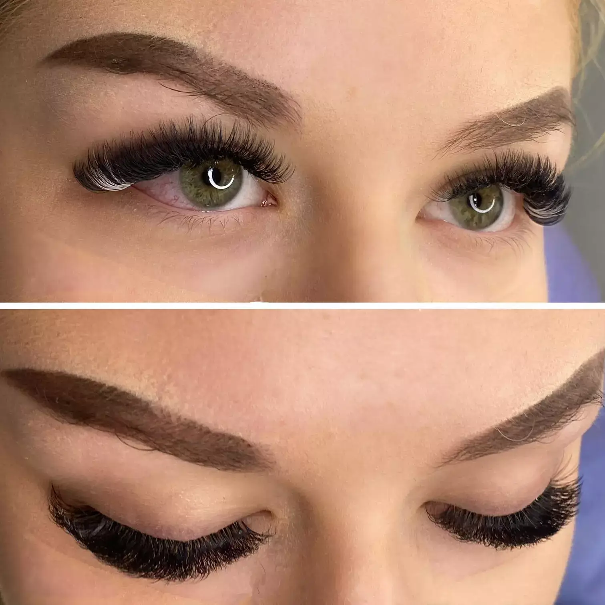

Маникюр и nail art
От чиста, нежна визия до по-смели цветове и декоративни детайли.
Салон за красота · Студентски град
Студио Ден и нощ е на ул. „Акад. Стефан Младенов“ 50 — удобно място за поддържана визия близо до университетската зона.

Услуги
Поддръжка за ръце, мигли и коса — с ясна локация и лесен контакт.
От чиста, нежна визия до по-смели цветове и декоративни детайли.
Ламиниране, оформяне и акцент върху погледа с прецизна работа.
Оформяне и поддръжка на косата за завършена ежедневна визия.
Визии
Изберете настроение — нежно, ярко, бляскаво или практично за всеки ден.



Предимства
Подходящо място за поддръжка на визията преди работа, университет, среща или вечер навън.
Чисти линии, добре подбран цвят и завършек, който стои поддържано.
Салонът е в Студентски град, близо до ежедневния ритъм на квартала.
Маникюр, мигли и коса на едно място, когато искате бързо освежаване.
Карта и контакти
Отворете картата за точна навигация или се обадете за час.
Име: Студио Ден и нощ
Адрес: ул. „Акад. Стефан Младенов“ 50, София
Телефон: +359 2 488 7080
Instagram: studiodayandnight